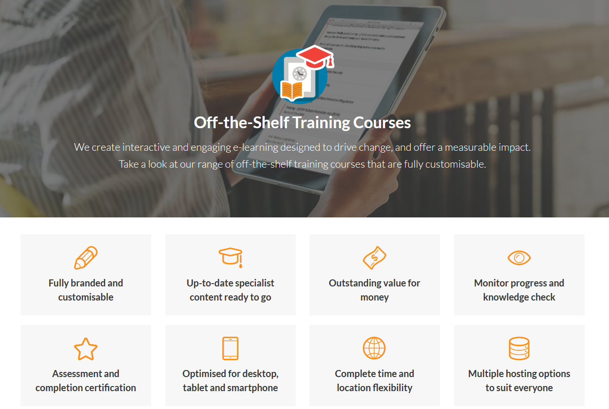
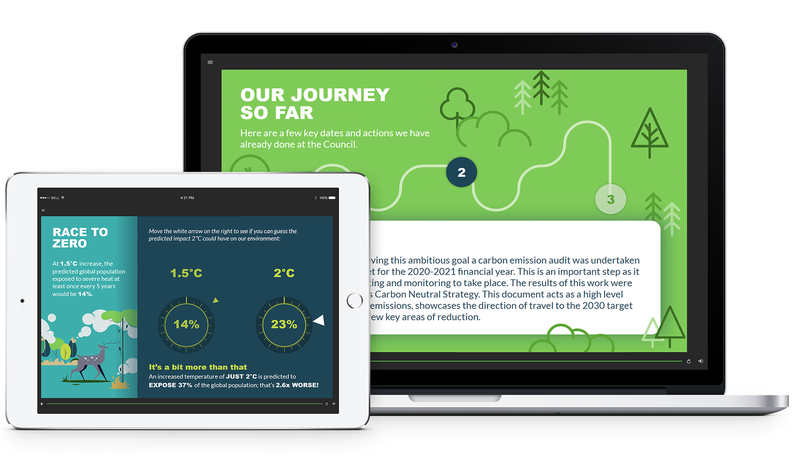
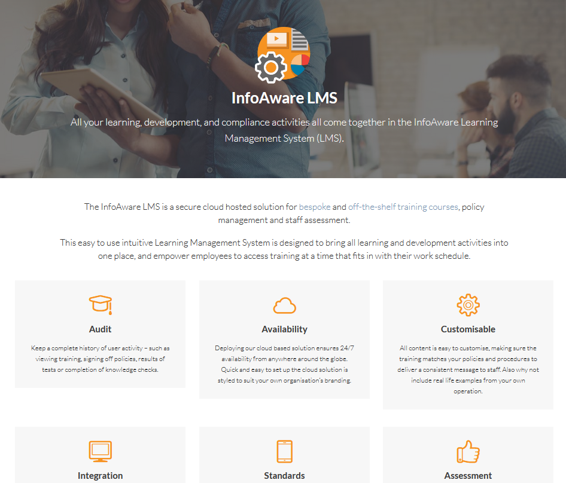
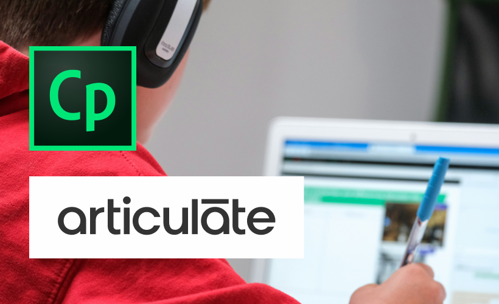
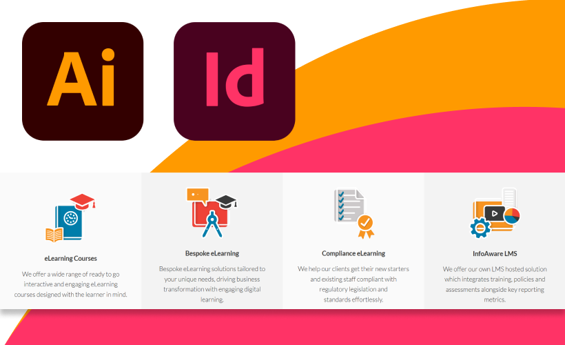

- Client:
- InfoAware - E-learning training provider
- www.infoaware.com
- Project(s):
- Creating E-learning courses with Adobe Captivate and Articulate Storyline.
- Refreshing the website’s visual appeal with bespoke iconography and enhancing digital presence and educational resources.
- Role:
- E-learning designer, graphic designer.
About the project(s)
Creating E-learning courses with Adobe Captivate and Articulate Storyline and refreshing the website’s visual appeal.
InfoAware is a forward-thinking company specialising in delivering innovative learning and development solutions that drive real change. Operated by Sphere International Limited, which was incorporated on 20 February 1996, InfoAware has built a reputation for providing comprehensive and impactful e-learning and compliance solutions.
Source image: InfoAware
One of their key offerings is a range of off-the-shelf training courses, designed to be interactive and effective. These courses are fully customisable, allowing organisations to tailor content to their specific requirements while ensuring measurable improvements in performance and outcomes.
Source image: InfoAware
All of these learning initiatives come together within the InfoAware Learning Management System (LMS) - a centralised platform that seamlessly integrates training, development, and compliance activities. This powerful tool ensures that businesses can efficiently manage learning processes while tracking progress and results.
Source image: InfoAware
Moreover, InfoAware offers learning consultancy services designed to deliver measurable results. Their consultancy approach involves creating tailored L&D strategies that align with an organisation’s vision and objectives. From developing off-the-shelf training to crafting bespoke learning solutions, InfoAware partners with businesses to build a skilled, compliant, and engaged workforce.
Source image: Samsung UK on Unsplash
During my time collaborating with InfoAware, I played a pivotal role in enhancing their digital presence and educational resources. I developed engaging e-learning courses using tools such as Adobe Captivate and Articulate Storyline, designed to educate users effectively while maintaining an intuitive learning experience.
Source images: Adobe Captivate logo. Know more about Adobe Captivate. Articulate Storyline logo. Know more about Articulate Storyline. Compare Fibre on Unsplash
Additionally, I took charge of refreshing the website’s visual appeal by creating bespoke illustrations and new iconography, utilising Adobe InDesign and Adobe Illustrator to craft a modern and cohesive aesthetic.
Iconography, utilising Adobe InDesign and Adobe Illustrator.
Source images: InfoAware, Wikipedia
My contributions not only supported InfoAware’s mission to deliver impactful digital solutions but also reinforced its commitment to user-friendly, visually engaging content.
Read more case studies